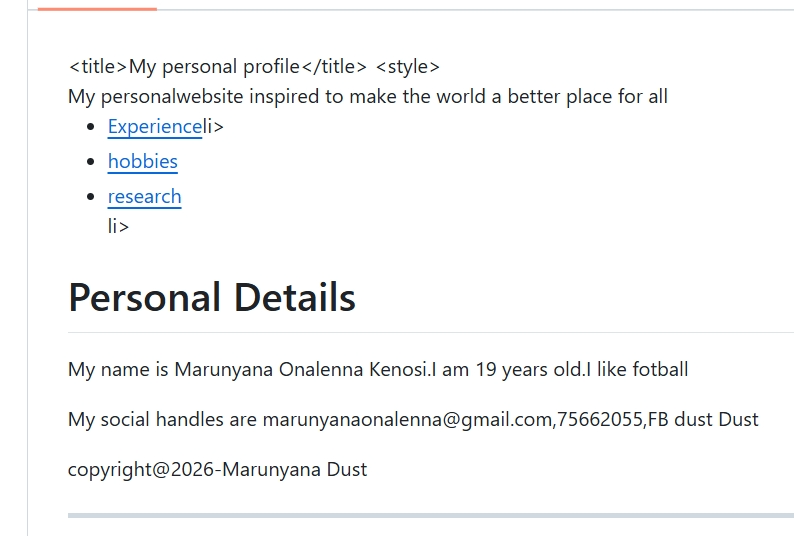
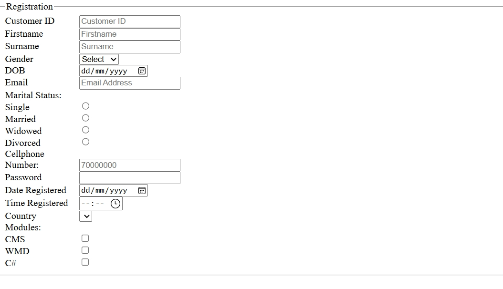
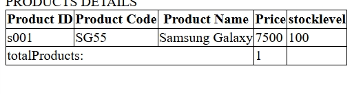

My Portfolio
Here are some of the projects I would have worked on as part of my web development journey.

Project 1: Personal Portfolio Website
A simple HTML and CSS site showcasing my skills and journey.

Project 2: Blog Layout
A basic blog page structure with articles and navigation.
My Portfolio
Here are some of the projects I would have worked on as part of my web development journey.

Project 1: Personal Portfolio Website
This was my first attempt at creating a portfolio site. My challenge here was keeping the design consistent across multiple pages. I solved this by using a shared CSS file for all pages.

Project 2: Blog Layout
In this project, I struggled with placing images correctly inside blog posts.
I learned how to use the <img> tag properly and style images with CSS.

Project 3: Skills Page
Another challenge was showing my skills visually. I solved this by using Bootstrap progress bars to represent my learning levels.